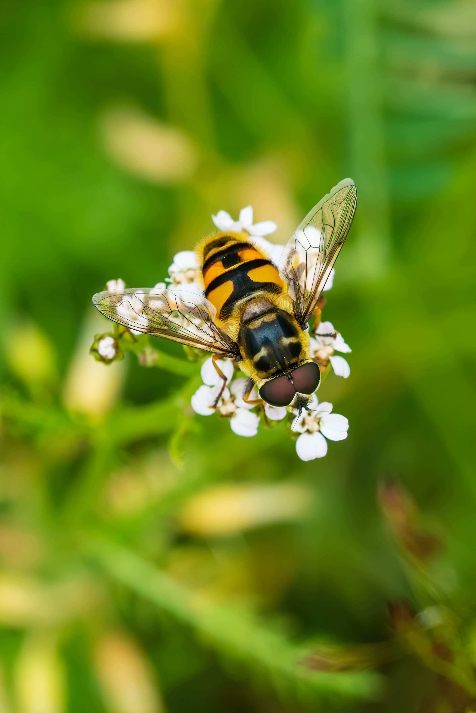
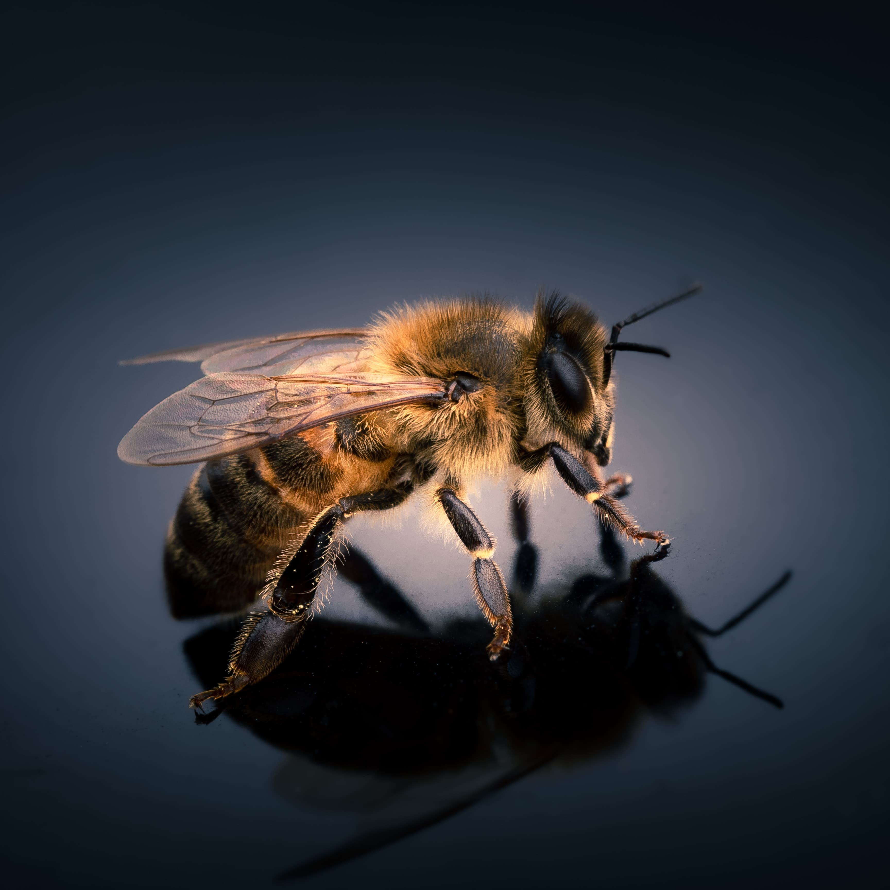

Anthophila
da Superfamília ApoideaAbelhas(Anthophila) são insetos voadores, conhecidos pelo seu importante papel na polinização. A abelha rainha vive até dois anos, enquanto as operárias não duram mais que um mês e meio. Uma abelha campeira visita 10 flores por minuto em busca do pólen e do néctar.
A maior parte das espécies de abelhas são solitárias, não fabricam mel nem constroem colmeias; todas têm, no entanto, um papel muito importante na polinização.
O representante mais conhecido é a Apis mellifera, oriunda do Velho Mundo, criada em larga escala para a produção de mel, própolis, geleia real e veneno. As espécies de abelhas nativas das Américas e Oceania não possuem ferrão e são menos agressivas do que as espécies africanas, a maioria destas pertence à tribo Meliponini. Há mais de 25 000 espécies de abelhas conhecidas em sete famílias biológicas reconhecidas.
Elas são encontradas em todos os continentes, exceto a Antártida, em todos os habitats do planeta onde existam plantas de flores polinizadas por insetos. Elas estão adaptadas a uma alimentação de néctar e pólen, o primeiro principalmente como uma fonte de energia e os últimos principalmente pelas proteínas e outros nutrientes.
"Se as abelhas desaparecessem da superfície da Terra, a humanidade não teria mais do que quatro anos de vida.”
- Estado de conservação: ❗ PREOCUPANTE ⚠️
- Reino: Animalia
- Filo: Arthropoda
- Classe: Insecta
- Ordem: Hymenoptera
- Idade Média: 45 dias
A maioria do pólen é usado como o alimento para as larvas que as tem definido como um insecto herbívoro mas que estudos recentes podem obrigar a reconsiderar essa posição científica, catalogado-as antes como omnívoras, pois foi percebida a importância alimentar das proteínas microbianas existentes no interior do mesmo pólen.
Os mais antigos fósseis de abelhas foram encontrados presos em âmbar. Estas abelhas pertencem a espécies e gêneros agora extintos. O fóssil mais antigo descoberto, até hoje, é o Melittosphex burmensis: com 100 milhões de anos; essa minúscula espécie descoberta em 2006 na Birmânia tinha grãos de pólen nos pés.